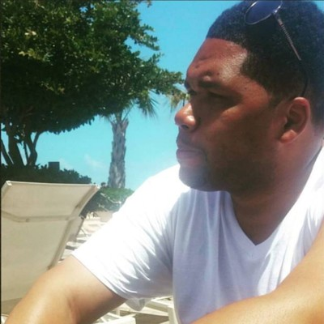

Terrell Scott

Remembering sunny days in Puerto Rico
- Personal Background: Born and raised in Philadelphia. Moved to Charlotte in 2007. Husband, father of 4 year old twin boys.
- Academic Background: Started in CIS years ago, now finishing up Web Technologies. Also taking the Coursera Google UX/UI program.
- Background in this subject: Actually taking 215 for the third time and 250 for the second. 215 was overwhelming the first time,
and my son had an accident that made me check out of both classes last spring. Third time’s the charm, right?
- Primary Computer Platform: Asus Zenbook Duo, Windows 11
-
Courses I'm taking and why:
- WEB215 - Advanced Markup and Scripting - Because I have a score to settle.
- WEB250 - Database Driven Websites - Because it will help me get that job I always wanted.
- Funny/Interesting item about yourself: I’m 6’9”. I wear a size 18. For some reason I have a Chihuahua and a Boxer.
- I'd also like to share: I learned a lot from my failures. Talk to me if you don’t want to make the same mistakes. And if you fail either of these classes, you have to wait until next spring to take them again.